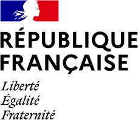

About
Objectives: community ecology, population dynamics and conservation biology.
Tools: statistics (tests, factorial analysis, maximum likelihood, Bayesian inference) and informatics (R, GRASS GIS, Python, Java, C++, Bash).
Institute:
Cirad, UMR AMAP, F-34398 Montpellier, FRANCE
ghislain.vieilledent(at)cirad.fr